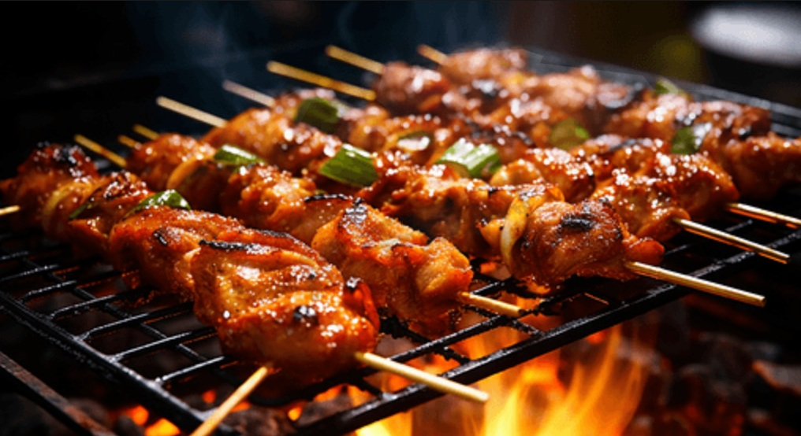

烧烤是人类最古老的烹饪方式之一，通过炭火高温烤制食材，赋予食物独特的焦香风味。中国烧烤文化源远流长，各地都有特色烧烤，如新疆羊肉串、东北烤串、云南烧烤等。
肉类：羊肉串、牛肉串、鸡翅、五花肉、香肠 蔬菜：茄子、青椒、金针菇、土豆片、玉米 海鲜：生蚝、扇贝、鱿鱼、虾
炭火烧烤最佳温度在200-250℃，食材要提前腌制入味。烤串时要不断翻面，避免烤焦。刷油要适量，撒料要均匀，最后撒上孜然和辣椒面。